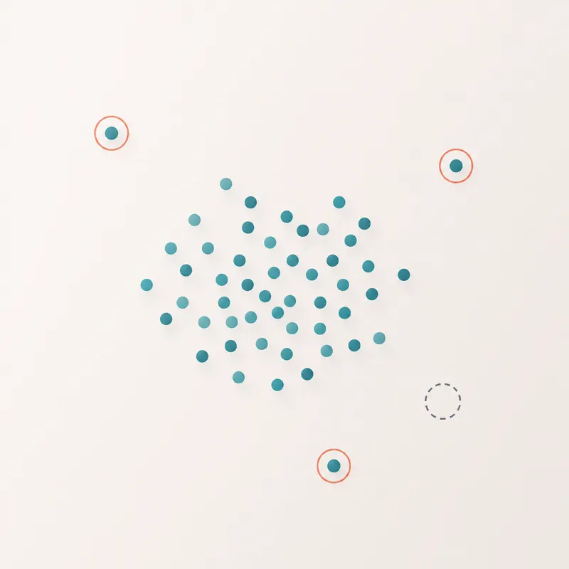

Unidad 3 · Carga y exploracion de datos de salud
Importar datos
library(tidyverse)
salud <- read.csv("data/salud_muestra.csv")
glimpse(salud)
head(salud)Faltantes, outliers e inconsistencias

colSums(is.na(salud))
summary(salud[, c("edad", "imc", "glucosa_mg_dl")])
table(salud$diagnostico)Decision documentada
Antes de graficar o probar hipotesis, deja por escrito que variables existen, que problemas aparecen y que criterios usaras para conservar, corregir o excluir registros.